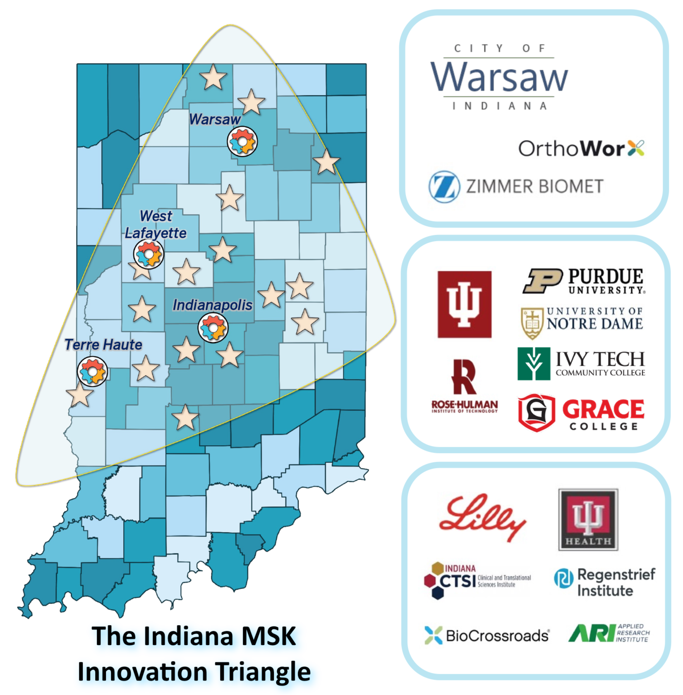

Regional coordination
Connects stakeholders across academic, clinical, industry, community, and public-sector environments.

ABOUT US
Connecting Indiana’s people, expertise, and resources to advance musculoskeletal innovation.
Indiana has deep clinical, research, manufacturing, workforce, and industry strengths. NSF IMPACT Engine brings those assets into a coordinated ecosystem so discoveries, technologies, talent, and partnerships can move more directly toward real-world use.
The Engine focuses on reducing fragmentation across sectors, connecting regional capabilities, and creating clearer pathways for partners who want to solve pressing musculoskeletal health challenges.

The Indiana MSK Innovation Triangle brings together academic, clinical, manufacturing, workforce, life sciences, and investment strengths that make the state a practical home for musculoskeletal health innovation.
IMPACT turns Indiana's regional strengths into coordinated pathways for moving ideas from need to deployment.
Connects stakeholders across academic, clinical, industry, community, and public-sector environments.
Supports movement from discovery and unmet need toward validation, commercialization, adoption, and impact.
Develops the people and skills needed to sustain Indiana's musculoskeletal innovation economy.
IMPACT brings together a growing network of academic, clinical, industry, community, nonprofit, and public-sector partners invested in musculoskeletal innovation.
Meet the leadership team.
Interim Chief Executive Officer
Chief Scientific Officer
Chief Learning Officer
Chief Technology & Innovation Officer